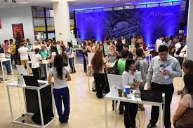
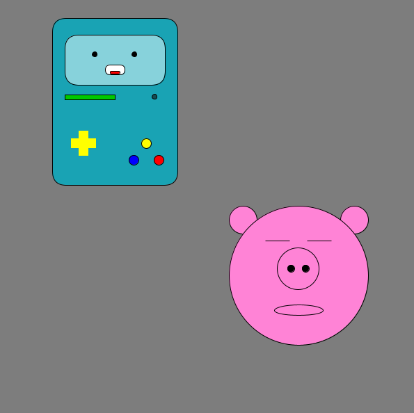

Projetos
Projeto PIBICjr 2019
Esse foi um projeto desenvolvido para uma exposição de projetos científicos
aberta para diversas escolas. Ná época eu estudava no colégio cidadão do amanhã
e participava da turma de robótica.
Nosso projeto era um laboratório químico construído em lego. Consistia de replicas
de alguns equipamentos, como misturador e centrífuga, e era de propósito didático.
Acabamos ganhando em primeiro lugar na categoria de ensino fundamental.

Personagens
Projeto desenvolvido na disciplina de experiência criativa. O objetivo era criar
um personagem no aplicativo processing. Processing usa java e também pytho para construir
aplicativos e fazer prototipagens.
Meu objetivo foi construir o personagem BMO do desenho hora de aventura. Já o de meu colega João,
um porco. Nessa imagem tivemos é a representação de como a versão final dos personagens ficou.

Jogo em Construct - Hassle
Projeto de experiência criativa cujo objetivo era desenvolver um jogo usando a ferramenta construt 3.
Construct é uma ferramenta web com foco em desenvolvimento de jogos, tem uma versão gratuita limitada.
O Hassle, é um jogo de aventura do tipo plataforma. A personagem, Hannah Kennedy, tem a missão de invadir
uma região industrial contamida e eliminar os monstros mutantes enquanto fecha as valvulas responsáveis pela contaminação.